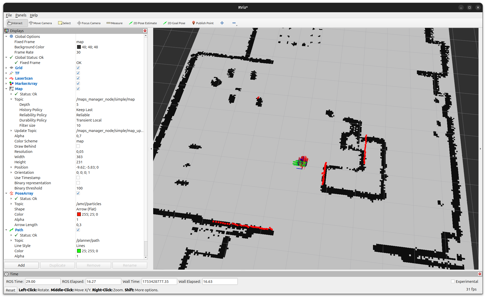
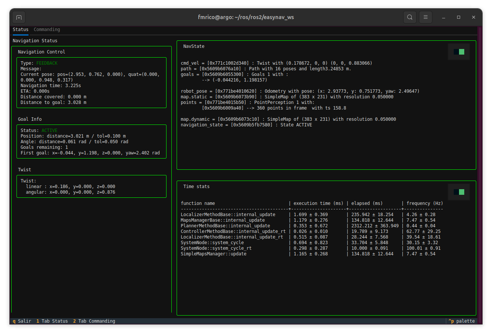

Getting Started
This section guides you through your first run of EasyNavigation (EasyNav) using a simulated Turtlebot2 robot in a domestic environment, from the Kobuki PlayGround.
Overview
We will run a ready-to-use simulation setup consisting of:
Robot: Turtlebot2 (Kobuki) with a 2D lidar
Environment: indoor domestic map (AWS RoboMaker small house)
Configuration: first the Simple plugins, then the Costmap plugins with the Regulated Pure Pursuit controller
Simulator: Gazebo Harmonic with RViz2 visualization
Setting up
Install the Kobuki PlayGround with APT (see Build & Install). It brings EasyNav and every plugin its configurations use:
sudo apt install ros-<distro>-easynav-playground-kobuki
Use jazzy, kilted or lyrical: the PlayGrounds do not support humble’s Gazebo, and rolling has no APT packages (use Pixi or build from source). The PlayGround is self-contained: the robot model, the world, the maps and the EasyNav configurations are all in this package.
To build it from source instead, build EasyNav as described in Install from source
(~/easynav_ws), then clone the PlayGrounds into the same workspace:
cd ~/easynav_ws/src
git clone -b rolling https://github.com/EasyNavigation/easynav_playgrounds.git
cd ~/easynav_ws
rosdep install --from-paths src --ignore-src -y -r
colcon build --symlink-install --cmake-args -DCMAKE_BUILD_TYPE=Release
Sourcing the workspace
In every new terminal you open for the rest of this guide:
source /opt/ros/<distro>/setup.bash
source ~/easynav_ws/install/setup.bash # Only if you built from source
First run: the Simple stack
Launching the simulator
In a first terminal, start the simulation of a Turtlebot2 robot in a domestic environment:
ros2 launch easynav_playground_kobuki_worlds gazebo_sim.launch.yaml

To save resources, you can disable the Gazebo graphical interface with gui:=false.
Visualizing in RViz2
In a third terminal, start RViz2 with the PlayGround’s configuration:
ros2 run rviz2 rviz2 \
-d $(ros2 pkg prefix easynav_playground_kobuki)/share/easynav_playground_kobuki/rviz/easynav_simple.rviz \
--ros-args -p use_sim_time:=true

Visualizing internal process with the TUI
In addition to RViz2, EasyNav provides a Terminal User Interface (TUI) that allows you to monitor the internal state of the navigation system in real time. It is a text-based dashboard that displays key diagnostic information and performance metrics directly in the terminal.
You can launch it in a new terminal after starting the EasyNav system:
ros2 run easynav_tools tui
The TUI is divided into several panels:
Navigation Control: shows the current navigation mode (e.g., FEEDBACK, ACTIVE), current robot pose, progress toward the goal, and remaining distance.
Goal Info: displays details of the active navigation goal, angular and positional tolerances, and goal list.
Twist: real-time linear and angular velocity commands published by EasyNav.
Diagnostics: the diagnostics of the recovery system (
diagnostic_msgs/DiagnosticArrayondiagnostics), e.g. fromDiagnosticRecoveryManager(see Recovery System).Mitigation: what the active recovery mitigation reports doing (on
mitigation), cleared when the problem is resolved.NavState: shows internal blackboard data structures such as robot_pose, cmd_vel, active map, and navigation_state.
Time stats: performance profiling of each system component (localizer, planner, controller, maps manager, etc.) including average execution time and update frequency.
This interface is especially useful for debugging or performance evaluation without relying on graphical tools.


Press q to exit the TUI.
Note
The TUI is optimized for dark terminals and supports color highlighting for active modules and real-time performance indicators.
Troubleshooting
Robot does not move: check that EasyNav is running (
system_mainin its terminal) and that the localization in RViz2 matches the robot’s position in Gazebo.EasyNav terminates by itself: the recovery system may have requested a shutdown (e.g. no sensor data, or a miswired ROS graph). The reason is printed when
system_mainexits.The robot does not appear in Gazebo: if you switched branches of the PlayGround, remove its
build/andinstall/directories and build it again: with--symlink-install, files removed in the new branch stay ininstall/as broken links.Build errors: revisit Build & Install and ensure dependencies were correctly installed via
rosdep.
Next steps
You have successfully launched EasyNav with a simulated robot!
Continue exploring:
PlayGrounds — the other robots and configurations.
HowTos and Practical Guides — follow practical guides for mapping, navigation, and real robot deployment.
Developers Guide — dive into the internal design and architecture of the EasyNav framework.
Migration Guide — if your robot already uses Nav2, how to try EasyNav on it.